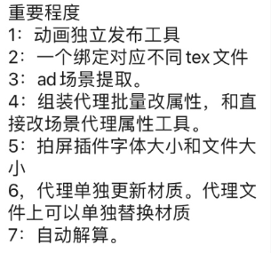
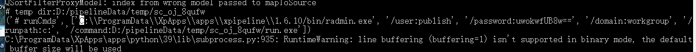
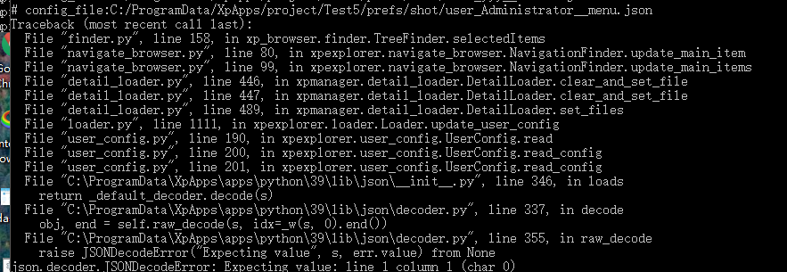
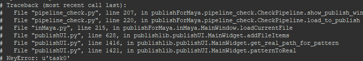

maya2024软件下载地址： 链接：https://pan.baidu.com/s/1lbwNjk-n_yFvIs7MoD15AQ 提取码：ge2a
- [x] | | 个人版 | 基础版 | 专业版 | | :--------------- | :----: | :----: | :----: | | 单人 | √ | | | | 多人 | | √ | √ | | 项目数量不限 | √ | √ | √ | | 发布 | √ | √ | √ | | 组装 | √ | √ | √ | | 外包相关 | | | √ | | 文件回收 | | | √ | | | | | | | 自动关联Deadline | | | √ | | 数据可视化 | | | √ | | pythonApi开放 | | | √ | | | | | |

-
[ ] bbs
-
[ ] 1. 外包动画打包
-
绑定一对多个额材质
-
AD导出、组装
-
-
[ ] 操作日志
-
[ ] 通过界面的所有操作自动记录操作内容、时间、人等
-
[ ] 本地日志输出文件
-
[ ]
"filename": "{xp_common_cache_directory}/logs/users/{localhost}/xpipeline.log" -
[ ]
"cache_temp_path": "D:/pipelineData", -
[ ]
-
[ ] 组装
-
[ ] 资产
- [ ] 批量出tx
- [ ] 资产检查、测试
-
[ ] 组装分析、日志分析
- [ ] 添加错误数量列
-
[ ] 添加忽略细小错误,选项
-
[ ] abc参数: xgen头皮导出abc参数，根据运动模糊的参数，自动适配
-
[ ]
python -frameRelativeSample -0.25 -frameRelativeSample 0 -frameRelativeSample 0.25 -
[ ] ass代理参数
-
[ ] 代理导出路径、规则（命名）可自定义，更好适配不同项目
-
[ ] 镜头管理器
-
[ ] 动态预览图标，添加可刷新图标动画菜单
-
[ ] 用户操作日志（内容、时间等）
-
[ ] 在系统托盘中右键菜单直接启动
-
[ ] 组装运行中，保存内存等资源使用记录
-
[ ] 用于数据统计、分析、可视化
-
[ ] maya中批量导出abc工具(解算环节、其他环节)
-
[ ] 发布系统
-
[ ] 禁用窗口最大化
-
[ ]
-
[ ] python3
-
[ ] super user 发布任务 
-
[ ] 读取用户数据错误时 
-
[ ] ## 流程软件
-
[ ] 添加主菜单、软件信息
-
[ ] 列编辑器：排序
-
[ ] 自定义搜索、过滤功能
-
[ ] #### 用户状态保存、加载（实时保存）
-
[ ] ui、layout布局保存
-
[ ] 恢复
-
-
[x] 命令类column，锁定用户编辑
-
[x] 用户可输入、存储数据（excel表格功能）
-
[x] 子item的数据存储问题
-
[ ] #### 统计、数据可视化
- [ ] 状态栏中简单数据计算、统计
-
[x] python3测试
-
[x] 主题、风格切换
-
[ ] 唯一名字获取方式测试
-
[x] 发布检查
-
[x] 异常、错误， 显示错误信息
-
[ ] 资产发布（AD）
-
[x] ABC类型支持Gpu类型（可携带基础材质颜色等）
- [ ] 扩展功能根据贴图颜色自动获取颜色
-
[ ] 启动器
- [ ] 项目相关bat文件隐藏
- 启动器中启动时自动创建
- 或保存主程序目录中
-
[x] 系统文件快速访问（添加标签名字）
-
[ ] ### 导航栏过滤
-
[ ] 环节独立显示
- [ ] 根据用户名字
-
[ ] 分隔（类似maya大纲），独立显示收藏、自己的任务等
-
[ ] 两侧边栏升级
-
[ ] 右侧信息栏、添加任务概述
-
[ ] 制片、主管，可输入当前任务的相关描述等
-
[ ] ### 授权规则
-
[ ] 1. 安装时开始计时（生成初始时间码、默认测试版本key）
-
有全局授权码 + 项目授权码
- 全局授权码无效时
-
无全局授权码
- 只识别项目授权码
-
-
[ ] ### 不同的授权版本
-
[ ] 授权文件中
-
[ ] 用户类型（用户权限）
-
[ ] 是否可自定义图标、自定义标题名字等（公司logo等）
-
[ ] 是否可修改主体颜色等
- [ ] 是否有开发者相关功能（内部Python是否可用）
-
[ ] 盘符映射时，先检查盘符是否存在、且是否正确
-
[ ] 盘符不符时，将重新映射
-
[ ] 资源库<-->rv
-
[ ] 视频库
-
[ ] Dailys系统
-
[ ] 程序化访问daily视频图片等
-
[ ] ### 更新状态栏
-
[ ] 添加用户类型选择（不同用户，拥有不同权限）
-
[ ] 普通用户
-
[ ] 制片
-
[ ] 管理员
- [ ] 开发者
-
[ ] ### 解算组装、自动解算设置（07-02）
-
[ ] 法线检查
-
[ ] 检查模型定点法线是否被锁定
-
[x] 普通用户模式下，图像无法显示问题
-
[ ] 导出abc时，自动忽略不存在的节点
-
[x] 资产发布输出ad（可自定义输出路径）
-
[ ] ### 组装
- [ ] 可选择的材质、毛发文件版本
-
[ ] 镜头组装任务，显示原始发布信息
-
[ ] 原发布文件版本等
-
[ ] 发布记录在队列中显示
-
[x] 运行日志打包
-
[x] deadline渲染maya版本问题
-
[x] 开始任务时、自动获取maya版本
-
[x] 启动器窗口，取消左右停靠功能
-
[ ] 动画检查
-
[ ] 资产引用必须有空间名字
-
[ ] 流程管理
- [x] 公共、可写入的的缓存路径
- [x] 视频--》序列缓存
-
[ ] 显示发布任务历史
-
[ ] 镜头管理优化获取唯一名字的方法
-
[ ] 分割路径、获取关键名字
-
[ ] 资产检查
- [ ] 检查模型点是否有数值（冻结模型点）
-
[ ]
-
[ ] 身体资产--》改名 材质。。。
系统自检
- [x] 状态栏显示
-
[x] 自定义状态栏、分类显示更多内容
-
[ ] 菜单编辑，菜单图标可自定义
-
[ ] 发布账户，自动邮件问题
-
[ ] 实时显示任务状态（是否在渲染、装配等）
-
[x] 日志打包
-
[ ] 检查cache盘空间(cache盘建议保留较大空间)
- [ ] 界面显示相关信息
-
[ ] 删除cache（10天之前的缓存）
-
[ ] 检查相关软件是否安装
-
[ ] 测试服务器环境下运行权限问题
-
[ ] 资产组装任务，继承镜头功能
-
[ ] 无标签时，使用默认值

组装
- [ ] 导出特效示意
- [ ] 导出场景
- [ ] Abc版本
- [ ] 动画文件更新后，只勾选了组装材质文件，未勾选abc时
- [ ] 自动查找上个版本的abc文件
- [ ] 标记颜色
- [ ] 基础库、文件调用
- [ ] 通用灯光文件、渲染设置文件
- [ ] 双击对话框
-
[ ] 显示镜头资产详细信息
-
[ ] 组装文件，资产根据类型自动分组(资产、背景、特效元素)
- [x] 导航栏展开时， 更新数字列显示(列宽度更新问题)
- [ ] 快速打开系统文件、目录（文件不存在时，报错、信息反馈）
- [ ] 搜索框
- [ ] 自动保存用户搜索信息
- [ ] 独立显示选择的item（镜头、资产）
- [ ] master
- [ ] 用户参数，快速访问、存储方案
- [ ] Qt程序绘图
- [ ] master
- [ ] 用户操作记录（用于错误追踪）
- [ ] 用户操作关联状态栏
- [ ] 界面相关操作
- [ ] 用户选择操作
项目菜单
-
[ ] 不同项目，不同项目菜单
-
[ ] 镜头资产文件锁定通道栏
- [ ] kyt组装加载解算Abc
- [ ] 组装run_config使用自定义字典, 属性的方式访问数据
- [ ]
无发布，组装
- [ ] 文件获取（File finder）
邮件
- [ ] 用户信息存储到 工具临时目录
-
[ ] 子用户可公用账户信息
-
[ ] 组装任务正在运行时，状态显示
- [ ] 再次运行新任务时提示
---
-
[x] 资产 item行，高度问题 （高度递减模式）
-
[x] 动画自动手柄帧
-
[ ] 队列自动调整列宽度无效。。。
-
[x] 根目录图标（镜头、资产图标）
-
[x] python3测试
-
[ ] 程序打包
-
[ ] 编译
- [ ] deadline测试渲染，通用化
- [ ] 配置
-
[ ] _xp_launch模块
-
[ ] 风格设置、权限
-
[ ] 数据导出
-
[ ] 导出表格（csv）
-
[ ] 分组功能
-
[ ] 分类
- [ ] 鼠标滚轮切换大小
-
[ ] 导航栏
-
[ ] 图标可切换，，显示镜头缩略图
- [ ] 字体可切换
-
[ ] 子线程中，自动更新子item数量
-
[ ] 管理员模式（时间限制，超时自动失效）
-
[ ] maya菜单，通过配置文件加载、控制
-
[ ] 任务发布
-
[ ] 加入队列排队等待
镜头管理状态
- [ ] 镜头管理状态自动刷新：当前运行状态列
-
[ ] 状态、组装时间、作者列
-
[ ] 自动更新
-
[x] 窗口显示时，运行一次队列刷新
-
[x] 卡顿问题
-
[ ] 先显示界面
-
[ ] 线程中运行
-
-
[x] 组装自动邮件
-
[x] glconfig.读入环境变量，，config.ihi配置
-
[ ] 管理员&高级选项
-
[x] python默认不加载
-
[ ] 日志加载，配置文件可控
-
[ ] G177 deadeline渲染
- [ ] 文件夹系统权限问题
-
[ ] 管理员账户测试
-
[ ] 组装
-
[ ] 镜头子选项、镜头单独一行
-
[ ] 搜索栏
- [ ] 回车 执行
- [ ] 输入框菜单
- [x] 显示字符删除按钮
属性编辑
- [ ] 类maya通道栏（批量属性设置、修改）
- [ ] 状态栏
- [ ] 状态栏历史记录回看
- [ ] 界面操作历史记录
- [ ] 操作事件信息显示
- [ ] 错误&日志
- [ ] 队列、任务优化
- [x] 日志服务器化
- [x] 任务重新开始(任务失败、停止时，可用)
-
[x] 任务立即开始（跳出当前队列、强制开始）
- [x] 未开始、时可用
- [ ] 只选择一条时可用
-
[ ] 删除日志
-
[ ] 删除任务栏
-
[ ] 双击队列显示日志
- [ ] 常见错误提示
- [ ] python兼容模式
- [ ] 组装错误日志
- [ ] 无abc
-
[ ] 模型大纲组命名错误
-
[ ] 无材质文件（文件命名错误、与绑定文件不匹配）
-
[ ] column_editor 渲染dialog更新

队列任务(镜头显示)
- [ ] 显示错误
- [ ] 错误数量
- [ ] 错误列表
- [x] 队列信息，添加作者名字
- [ ] 收藏栏
- [ ] 标签命名
- [ ] 显示内容返回、后退按钮
- [x] 界面返回、前进 （类资源管理器、网页等）
- [ ] 队列任务(镜头显示)
- [x] 根据队列任务独立显示镜头列表
- [ ] 返回到导航栏中加载的镜头列
- [ ]
- [ ] 状态栏
- [ ] 显示用户名字
- [ ] 超级用户模式显示
- [ ] 更新事件、信息等
- [ ] 管理员模式
- [ ] 可打开python
启动环境统一
- [ ] 启动器，子程序状态跟踪
-
[ ] 开始、解算时间等
-
[ ] rv
- [ ] rv镜头参数环境加载、统一
- [ ] nuke
-
[ ] houdini
-
[ ] 队列类型（build all --> shot）
!()[mind\mind_test_1.txt]
- [ ] 环境初始化、测试
-
[ ] 项目环境设置好后
- [ ] 生成组合配置（如：deadline直接可调佣的配置文件）
- [ ] 运行项目环境测试
-
[ ] 测试


镜头路径快速访问配置
Deadline maya版本自动选择
- deadline 测试渲染序列转视频自动帧速率
渲染测试文件、灯光文件
---
2023-04-06
- [ ] houdini deadeline 发布
2023-03-31
- [x] 离线任务失败时的状态更新、反馈
- [x] 进程状态检查（maya崩溃 ，抛出异常）
2023-03-30
- [ ] KYT组装场景版本问题
2023-03-28
- [ ] G117渲染测试
2023-03-27
- [ ] G117渲染测试
2023-03-24
- [ ] houdini节点属性链接
- [x] houdini kyt abc版本问题
- [x] houdini镜头加载，无数据时报错问题
- [x] 组装自动创建渲染测试文件
2023-03-23
- [x] houdini 镜头流程
2023-03-22
- [x] kyt灯光工具
- [x] 动态图标，镜头显示资产时错误
- [x] 队列栏，实时更新开始时间、持续时间显示不正确
2023-03-14
- [x] Nuke素材库
- [x] 序列播放
2023-03-13
- [ ]
2023-03-10
- [x] 序列图播放
2023-03-09
- [x] 更新列命令错误问题
2023-03-08
- [x] 用户选项对话框优化，，
- [x] 自定义菜单、可双击打开路径
-
[x] 测试渲染
-
[x] 渲染对话框，常规可控操作
- [x] 可选择渲染层
- [x] 分辨率百分比
2023-03-07
- [x] 搜索框
- [x] 列加减时，更新搜索标签选择
2023-03-06
- [x] 组装完成自动发邮件
- [x] 改进搜索功能（可选择搜索标签）
2023-03-03
- [ ] ffmpeg EXR转视频，普通播放器问题
邮件、账户问题
- [ ] 简化调用接口
- [ ] 独立的邮件（用户）登录
主题、风格
- [ ] 界面主体、风格可自定义
自定义进度条（彩色）
- [ ] deadline完成、未完成、暂停的进度等，不同的颜色显示
路径索引自定义
- [x] 镜头、资产，可自定义路径索引（根据镜头快速索引相应的目录等）
- 文件筐
- [ ] ct文件筐
超级用户选项
- [ ] 测试版本、debug等
账户、注册
2023-03-02
加载进度显示
- [ ] 窗口加载进度显示（等待、进度条显示）
- [x] KYT
- [x] 组装自动载入场景
- [x] 启动器根据 launch列表排序
2023-03-01
启动器
- [x] 启动器界面，无程序图标文件时，使用默认图标
-
[ ] Qt程序绘图-文字转图标
-
[x] 启动器更新（适配支持多软件）
- [x] houdini、nuke
- [ ] houdini 启动时：自动更新 用户.env文件
- [ ] 测试RV启动
- [ ] 根据项目配置RV（项目相关的文件、路径引用）
2023-02-27
-
[ ] 组装任务列表 可实时显示新文件列表
-
[ ] 组装后台渲染，任务失败时界面反馈
-
[ ] ## 界面语言
-
[ ] 镜头管理
-
[ ] KYT 双击显示当前镜头中使用到的资产（材质、毛发文件）
2023-02-25
-
[ ] ## 列风格
-
[ ] 可选择、
- [ ] 可自定义等
2023-02-24
-
[ ] ## 启动器
-
[x] 启动进程log获取（无效路径信息 提示等）
-
[x] 用户信息反馈、交互
-
[ ] 插件安装、信息提示等（安装用户maya用户菜单等）
-
[ ] #### 组装文件详细是日志输出
-
[ ] ## 镜头、资产文件筐
-
[ ] 组装信息存储文件（可和UI共享数据）
-
[ ] 数据刷新时，更新所有相关数据（自定义数据)
-
[ ] ### 搜索过滤
-
[ ] 搜索栏，添加 搜索哪一列选择项

-
[ ] 数据独立显示(筛选、过滤), 根据选项的镜头，显示镜头相关任务
- [ ] 独立显示选择镜头的相关任务
自动更新(自定义)图标

2023-02-23
镜头管理，列数据获取
- [ ] 可自定义Python命令
bbbb

2023-02-21
- [ ] 邮箱
- [ ] 邮箱密码临时路径问题
- [ ] 邮箱名字、密码中文输入时的错误问题
2023-02-17
- [ ] 镜头组装， 无代理输出时的，，合并文件读取代理错误问题。。
2023-02-10
-
[ ] 镜头管理器用户自定义列, 数据获取、运行自定义函数
-
[ ] 解算abc组合时临时abc文件 -> tmp文件存储到 临时目录
- [ ] 重新输出abc保留原始（属性输出）
2023-02-03
-
[ ] 动画优化文件问题， 用户重复创建
-
[ ] 动画曲线、延续帧
2023-01-17
- [ ] 后期后环节配合、文件版本问题
- [ ] 资源引用文件管理，版本切换
- [ ] 各环节启动器
- [ ] 资产、资源浏览器
2022
2022-11-22
- [ ] xgen
- [ ] xgen毛发文件，生长面、绑定等临时模型，需在不同组下
- [x] xgen毛发部分生长面范围错误时，尝试移除错误的生长面
- [x] 生长面打断链接，使用包裹
2022-11-18
-
[ ] 数据编辑
- [x] 添加列
- [ ] 编辑属性、 保存数据、文件结构设计
-
[ ] 后台接头(mayabatch)
2022-11-15
- [ ] 组装，只更新材质时，自动查找上一版abc文件
- [ ] 组装，更新 解算时 自动查找上一版abc文件
2022-11-11
- [ ] 项目数据库
- [ ] 资产、镜头数据库设计
- [ ] 名字、 提交时间、 修改时间、 制作人员
2022-11-04
- [ ] 详细的运行日志
2022-11-04
-
[ ] 属性面板，可像maya属性（可以copy出来、多个镜头任务使用pin的方式固定显示）
-
[ ] 自定义模式:abc导入时：模型定点如果有数值时，自动清理
2022-11-03
- [ ] 组装，，高亮显示最新文件、最新发布（未组装文件）
2022-11-01
- [ ] 资产库,加载、替换功能（替换reference、AD）
2022-10-27
- [ ] 资产库， 图标、生成临时文件
2022-10-22
- [x] RV-daily基础功能
2022-10-20
- [ ] 样式、显示相关参数可调整、可控(邮件发送样式、发布工具布局等)
2022-10-18
-
[ ] 镜头管理器， 添加资产管理
- [ ] 查看资产对应的、材质、毛发文件
- [ ] 可自定义指定绑定对应的材质、毛发文件
- [ ] 显示镜头中使用到的资产，显示空间名、真实文件名字（可切换）
-
[ ] 运行关键日志信息捕捉、记录、显示（反馈用户显示）
-
[ ] 邮件未登录时，发布完成后maya卡主
-
[ ] 镜头管理器， 移除序号列
2022-10-17
-
[ ] 邮件、无收件人时，忽略邮件发送
-
[ ] 镜头使用资产指定（绑定资产、渲染材质资产版本等）
2022-10-14
-
[x] 简略、可读的发布数据
-
[ ] 后台模式（batch）发布时根据文件命名自动查找截图
- [ ] 如果没有图，运行后台硬件渲染
-
[ ] 资产、镜头管理，窗口改成可浮动、并列显示模式
-
[ ] 资产自动测试系统
-
[ ] 邮箱密码问题（用户输出错误时， 报错）
-
[ ] 服务器最终资产修改后， 更新abc、 proxy等
2022-09-29
- [ ] browser默认载入按钮， 位置调整
2022-09-28
-
[ ] 发布拆分时， 模型组重名问题
-
[ ] 任务发布时的用户选项功能
- [ ] 用户选项可自动保存
- [ ] 加载还原选项
- [ ] 是否收集贴图
- [ ] 只发布组件
X:\L22\Main_Production\Work_Grp\Assets\ENV\BH\TEX\maya
2022-09-27
- [ ] 资产贴图使用抓取方案,
只收集有效贴图 - [ ] 场景中无贴图时， 不上传贴图
- [ ] 毛发资产重复发布时， 最终路径下多余的工程文件
- [ ] TPZ关联CT
- [ ] 发布详细日志记录
2022-09-26
-
[ ] 发布、上传文件完整列表
-
[ ] 菜单图标
-
[x] 检查无邮件问题
-
[ ] 如果覆盖之前的版本，记录此信息
-
[ ] 简化的发布信息文件---发布文件
-
[ ] check检查模型定点是否有数值
2022-09-25
- [ ] 材质发布默认包含毛发发布
2022-09-23
- [ ] 资产加载器, 可创建tab栏
2022-09-21
- [ ] 序列转视频、更新
2022-09-20
-
[ ] 发布记录、历史
- [ ] 资产发布
- [ ] 镜头发布
-
[ ] 拆分资产命名工具，自动命名
- [ ] 拆分资产发布，不能正确发布贴图问题
- [ ] 资产自动导出贴图文件夹相对路径问题
2022-09-19
- [ ] set 场景创建基本组问题
- [x] 编译更新mayabatch
- [ ] 资产发布，将有效文件导出
-
[ ] 问题节点列表，长名字显示
-
[x] 发布进度，嵌入主页面
2022-09-17
- [ ] 场景拆分时，自动判断命名有没被占用
- [x] 版本升级问题，获取最大版本号， 覆盖或者升级
2022-09-16
- [ ] 更新资产基础组创建AD
- [ ] dict_util 自定义字典， 字典clone
- [ ] tpz资产大纲命名确定
- [x] 命名检查、 大纲基础组创建
- [ ] 资产发布，，导出有效资产组, 固定命名的组导出
2022-09-15
- [ ] 文件组装，abc前后帧问题
2022-09-14
- [x] tpz外包工具， 非启动器方式加载
- [ ] DTYT外包工具
2022-09-13
- [ ] ~~演讲准备~~
2022-09-09
- [ ] 文件发布过程、详细进度显示
2022-09-08
- [x] 文件检查，类型（中文提示）
2022-09-07
- [x] 重新编译 maya.exe, 不显示命令行
- [x] 发布信息、在发布文件一份
- [x] 默认菜单是否加载
- [x] 邮件图片大小自动适配（大图缩小）
- [ ] 水印参数变量可调整